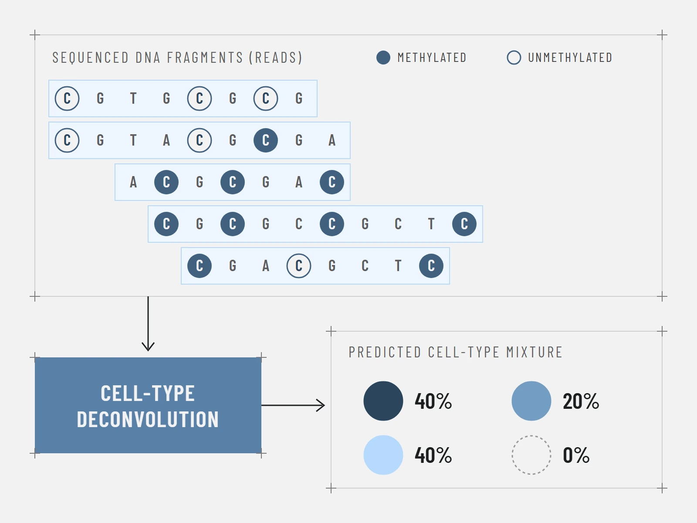

Paper explainer · 15 September 2026
Classifying a tissue sample one DNA fragment at a time
Assigning a DNA fragment to its most likely cell of origin gets harder as the number of possible cell types grows. The solution turned out to be letting the model know when to remain unsure.
Read the post